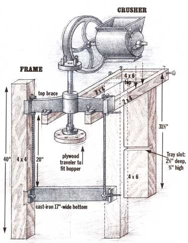

For the front legs to hold the iron-press supports, inner faces of two 40"" lengths of 4 x 4 PT southern pine were notched (3 1/2"" square and 1/2"" deep) by making multiple parallel saw cuts and chiseling out the soap. Then they were bored through with a 3/8"" augur bit under bolt holes cast into attachment flanges of the iron-press supports